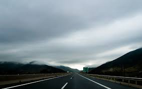

-
Jostein Gaarder Sofie'nin Dünyası
CENNET BAHÇESİ
...eninde sonunda herhangi bir zaman herhangi bir şey, boşluktan ve hiçlikten çıkmış olmalı...
Sofie Amundsen okuldan eve dönüyordu. Yolun bir kısmını Jorunn ile birlikte yürümüştü. Robotlar hakkında konuşmuşlardı hep Jorunn'e kalırsa, insan beyni karmaşık bir bilgisayardan ibaretti. Sofie pek emin değildi bundan. İnsanın bir makineden daha fazla bir şey olması gerekmez miydi?
Süpermarketin orada yolları ayrılıyordu. Bahçeli evlerle dolu bir dış mahallenin sonunda oturan Sofie'nin yolu Jorunn'unkinin iki katıydı neredeyse. Sanki dünyanın öbür ucundaydı evi, bahçelerinin ardında başka bir ev yoktu, orman vardı sadece.
Sofie Kloverveien'e saptı, sonuna kadar yürüyüp keskin bir viraj aldı. "Kaptan Viraajı" denilen yerdi burası. Cumartesi ve pazar günleri dışında hemen hiç kimseye rastlanmazdı.
Mayısın ilk günlerinden biriydi. Bazı bahçelerde meyve ağaçlarının dibindeki nergisler parlak sarı çiçeklerini açmıştı bile. Huş ağaçlarından incecik yeşil tüller sarkıyordu.
15. yaş gününü kutlamaya hazırlanan Sofie, posta kutusunda, "Kimsin sen?" yazılı bir kağıt bulur. Bu soruyu, diğer sorular ve günümüze kadar uzanan bir felsefe kursu takip eder.
Kendine has kurgusu ve şaşırtmacalarıyla, Jostein Gaarder, 15 yaş ve üstü gençlere sadece kuru bir felsefe tarihi sunmak değil, aynı zamanda hayatı anlamaya yönelik sorular sormanın yollarını açar.
Çağımız bölümünde şöyle diyor yazar: "Bütün gerçek filozofların gözleri hep açık olmalı. Hiç beyaz karga görmemiş olsak da, aramayı sürdürmeliyiz. Günün birinde, beni gibi bir şüpheci bile daha önce inanmak istemediği bir olguyu kabul etmek zorunda kalabilir. Bu olasılığın kapısını açık tutmasam, dogmatik biri olurdum. Gerçek bir filozof olmazdım o zaman."Jostein Gaarder Sofie'nin Dünyası
Jostein Gaarder Sofie'nin Dünyası
Felsefe tarihi üzerine bir roman."Benzer insanların", yüzeysel bilgilerin geçerli olduğu çağımızda, "3000 yıllık geçmişinin hesabını yapamayan insan günübirlik yaşayan insandır" diyen Goethe'nin günübirlik insanlarından olmama yolunda ciddi bir adım."
-
Kemal Sayar Sufi Psikolojisi
Geçmişin Bilgeliği Bugünün Psikoterapileriyle Buluşabilir Mi?
Anomi, anlamsızlık hastalığı olarak tanımlanabilir. Derinden hissedilen bir amacın yokluğu, kişinin çevresine ve dostlarına yabancılaşması, anominin özelliklerindendir.
Psikiyatrinin kimi yazarlara göre en önemli sorunlarından biri, hastalarına anlam sağlayacak bir teorik çerçeveden yoksun oluşudur. Özellikle nörotik hastaların, içinden kendilerine baktıkları kavramsal bağlam, onlara ne anlam, ne yön, ne de umut sunabilmektedir.
Bu bağlam, düzenli, mekanistik ve bir örnek evren düşüncesine yaslanan modern bilimsel dünya görüşünden kaynaklanır. Psikiyatri, anlamsızlık salgınına karşı bir reçete sunmaz ve insan gelişiminin modern süreçlerle akamete uğratılması konusunda da önerebileceği bir formül yoktur.
Hakikat, milyonlarca yıl önce yeryüzüne düşmüş ve parçalara ayrılmış kocaman bir elmas gibidir. Her bir parçayı bulan, elmasın o parçadan ibaret olduğunu zanneder. Oysa hakikat daha büyüktür, bütündedir. Bilimlerin tümünde olduğu gibi psikolojide de hakikatin sadece bir kısmına hâkimiz. Disiplinlerin birbirinden öğrenecek çok şeyinin olduğu günümüzde, "ya bilim, ya maneviyat" tarzı bir indirgemecilik yerine, "hem o, hem de o" yaklaşımı daha doğru görünmekte. Ruhun bilgeliğine ulaşmak için, bilgeliğin ruhuna nüfuz etmemiz gerek. Unutmamalı ki "Her arayan bulamaz, bulanlar sadece arayanlardır."
Sufi Psikolojisi Kemak Sayar
Kemal Sayar Sufi Psikolojisi
Sufi psikolojisi üzerine çeşitli yazıları bir araya getiren bu kitap, okurlara geniş kapsamlı ve zihin açıcı bir okuma vaat ediyor. Tasavvufun benlikten kurtulma pratiği olarak özetlenebilecek doktrini, günümüz psikoterapileriyle karşılaştırıldığında ortaya anlamlı bir sonuç çıkar mı? Sufi Psikolojisi’nde okuyacağınız makaleler bu sorunun cevabını arıyor.
-
Hasan Ali Toptaş Heba
Anahtar
Ziya kapıyı kilitledi ve elindeki anahtarı cebine koymadan, hızlı adımlarla asansöre doğru yürüdü. Koridorda bir tuhaflık vardı o sırada, ışıklar tavandan sarkan sarı toplar halinde her zamanki gibi sıra sıra yanıyordu ama ortalık biraz karanlıktı sanki. Hatta insanı hayrete düşürecek kadar da sessizdi.
Ne var ki pek uzun sürmedi, alt kattaki o kahverengi çelik kapılardan biri güm diye çarpılınca aniden yok oldu bu sessizlik. Kimin tarafından yapıldığı bilinmeyen tatlı bir şaka hızıyla, koridora kattığı genişliği de yanına alarak, neredeyse Ziya'ya göründüğü anda yok oldu. Hemen ardından, koca ağızlı bir çocuk sesi yükseldi merdiven boşluğundaki alacakaranlığın içinden.
Onun ardından simsiyah bir kadın çığlığı, onun ardından bir elektrik süpürgesinin oradan oraya gezinen sinir bozucu zırıltısı, onun ardından da nerede vınladığı kestirilemeyen tozlu bir matkap sesi yükseldi. Derken, duvarların gerisindeki duvarların gerisinden gelen gürültüler de katıldı bunlara. Hatta insana şehrin görüntülerini hatırlatan kadınlardan daha kalın uğultular da katıldı.
Heba bir çocukluk hatası gibi unutulan insanlığımızın, vicdan denen anahtarın, bir sınır boyunda gizlenenlerin, bir ömrü minnetle kaybedenlerin romanı. Heba; delinmiş bir uykunun ve onu bulanların hikâyesi... "Heba muhteşem ve merak uyandırıcı bir roman. Sanki dünyanın hiç bilmediğim bir yerine götürdü beni ve aslında her şeyin tanıdık olduğunu gösterdi aşk her yerde aşk, dost her yerde dost, ihanet her yerde ihanet."
Hasan Ali Toptaş Heba
Hasan Ali Toptaş Heba
Edebiyatın kirişlerini çatlatan büyük bir yazardan yalnızlığın, pişmanlığın,askerliğin, heder olmuş bir ömrün romanı. İpek kadar yumuşak ve ipek kadar sağlam. Sadık okurları için yeni keşifler sunacak, yeni tanışanları sadık okurlara dönüştürecek bir Hasan Ali Toptaş romanı...